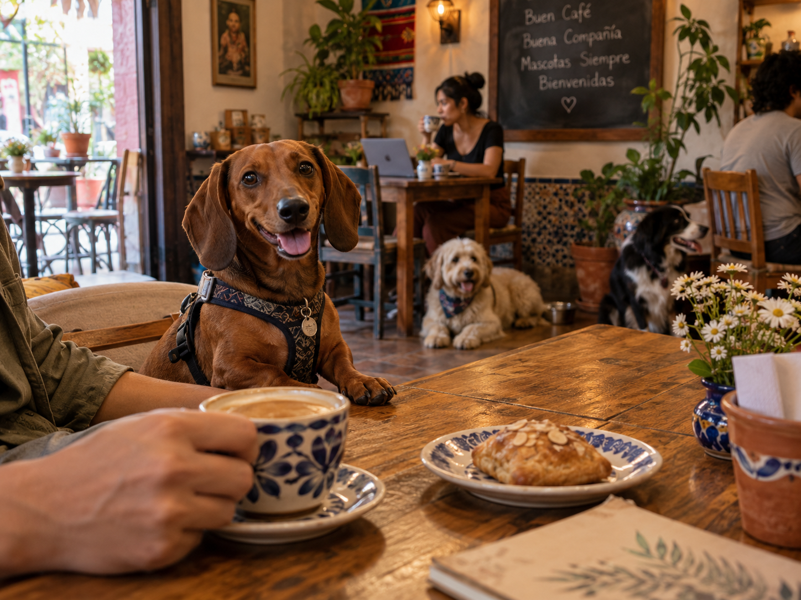
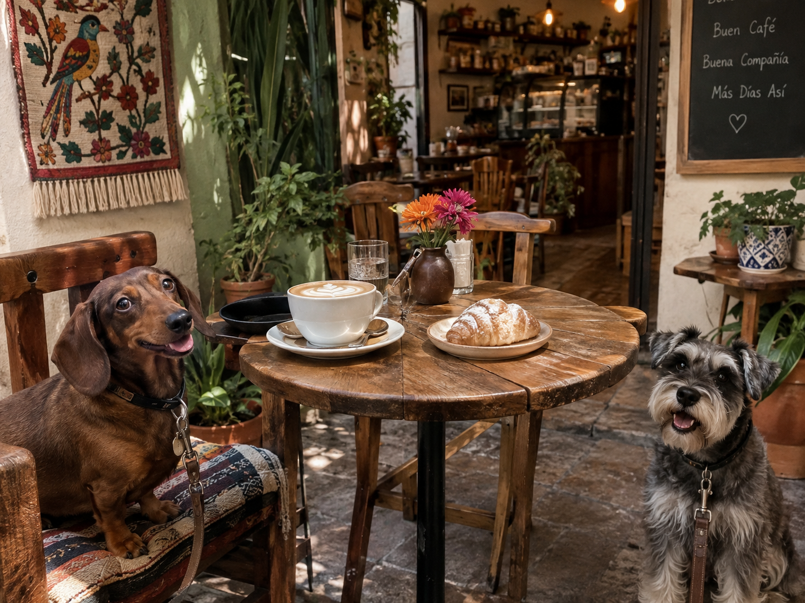
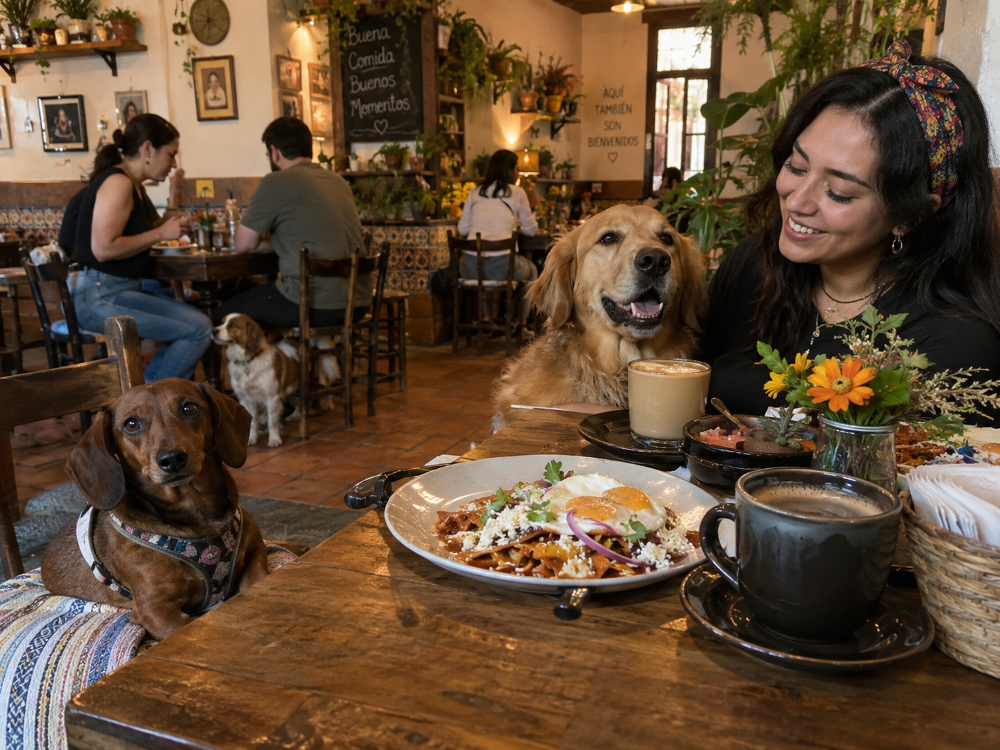
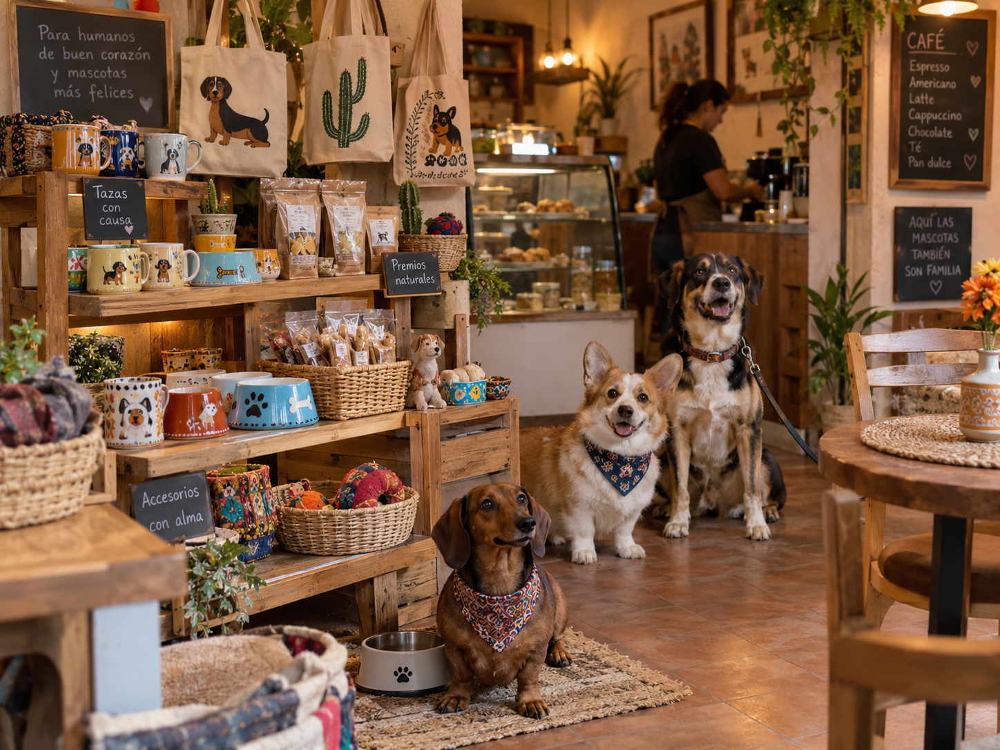

Sit & Coffee combina café, alimentos, productos para mascotas y artículos de la marca en una experiencia pensada para quienes disfrutan convivir con perros y gatos.
Ver menú y tiendaCómo comprar
Sit & Coffee es el nombre provisional de una cafetería pet friendly que se planea ubicar en la colonia Del Valle, alcaldía Benito Juárez, CDMX. Su oferta incluirá bebidas, alimentos, productos especiales para mascotas y souvenirs relacionados principalmente con perros y gatos.
Ofrecer una experiencia de consumo diferente para personas que disfrutan convivir con sus mascotas, mediante bebidas, alimentos y productos temáticos de calidad dentro de un espacio completamente pet friendly.
Consolidarnos como una cafetería pet friendly reconocida en la CDMX por nuestro concepto, experiencia de marca y variedad de productos, complementando la experiencia física con un canal de comercio electrónico.

Espresso con leche vaporizada.

Pavo, queso y vegetales.

Premios para consentir a tu mascota.
Taza temática de la marca.
Próximamente tendremos promociones especiales, actividades pet friendly y eventos para disfrutar acompañado de tu perro o gato.
Referencia visual de un ambiente relajado de cafetería.